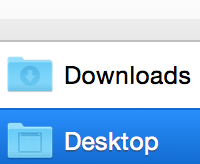
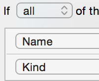
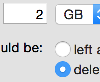

Discover Hazel
Meet Hazel, your personal housekeeper. Hazel can monitor whatever folders you choose and organize files according to rules you create.
Organize your folders. |
|
|  |
Hazel organizes whatever folders you tell it to, with special support for browser downloads. Find out more about how Hazel works with folders. |
Using rules. |
|
|  |
Through rules, Hazel organizes your files with logic you supply. Learn the ins and outs of using Hazel's rules. |
Managing the Trash. |
|
|  |
Not only can Hazel help with stuff coming in, but it can also deal with the stuff going out. Find out the ways Hazel can make it so that you never have to take out the Trash again. |